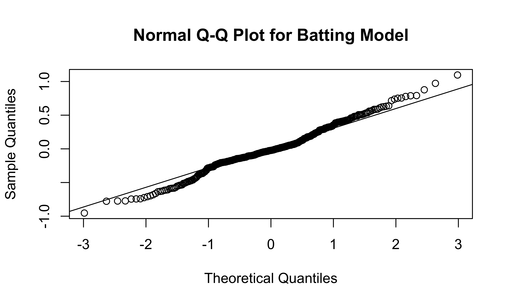

Batting Model
lm_batting = lm(log10(salary_2022) ~ ops_2 + experience_group,
data = merged_batting)
broom::tidy(lm_batting)| term | estimate | std.error | statistic | p.value |
|---|---|---|---|---|
| (Intercept) | 5.5217232 | 0.0669508 | 82.474364 | 0 |
| ops_2 | 0.0043860 | 0.0006429 | 6.822667 | 0 |
| experience_group3+ years | 0.8509329 | 0.0376350 | 22.610119 | 0 |
broom::glance(lm_batting)| r.squared | adj.r.squared | sigma | statistic | p.value | df | logLik | AIC | BIC | deviance | df.residual | nobs |
|---|---|---|---|---|---|---|---|---|---|---|---|
| 0.6228295 | 0.6206804 | 0.3432482 | 289.8068 | 0 | 2 | -122.2651 | 252.5303 | 268.0075 | 41.35459 | 351 | 354 |
plot(residuals(lm_batting) ~ fitted.values(lm_batting),
main = "Residuals vs. Fitted Values Plot for Batting Model",
xlab = "Fitted Values",
ylab = "Residuals")
abline(h = 0)
qqnorm(residuals(lm_batting),
main = "Normal Q-Q Plot for Batting Model")
qqline(residuals(lm_batting))
We decided to log-transform the salary variable because it is heavily right-skewed, and decided to use \(log_{10}\) instead of \(ln\) for the sake of interpretability. We included OPS+, the “all-in-one” measure of hitter performance as well as their number of years of experience.
From our model, we can see that batters with more experience have higher salaries, even adjusting for performance. At the same time, adjusting for service time, batters with higher OPS+ (that is, batters who perform better) have significantly higher salaries.
Based on this model, which player provided the best value for money? Who was most cost effective? That would be the player with a high OPS+ and the lowest residual, indicating that their actual salary was lower than predicted based on their performance.
Top 5 Batters by Value
merged_batting |>
modelr::add_predictions(lm_batting) |>
modelr::add_residuals(lm_batting) |>
arrange(resid) |>
select(name, salary_2022, service_time_floor, experience_group, ops_2, pred, resid ) |>
mutate(expected_salary = 10^pred) |>
slice(1:5) | name | salary_2022 | service_time_floor | experience_group | ops_2 | pred | resid | expected_salary |
|---|---|---|---|---|---|---|---|
| Brandon Drury | 900000 | 5 | 3+ years | 122 | 6.907744 | -0.9535020 | 8086200 |
| Luke Maile | 900000 | 4 | 3+ years | 82 | 6.732306 | -0.7780632 | 5398905 |
| Kyle Higashioka | 935000 | 3 | 3+ years | 85 | 6.745464 | -0.7746520 | 5564980 |
| Dylan Moore | 1350000 | 3 | 3+ years | 121 | 6.903359 | -0.7730247 | 8004948 |
| Colin Moran | 1000000 | 4 | 3+ years | 85 | 6.745464 | -0.7454636 | 5564980 |
Top 10 Batters by Salary
merged_batting |>
modelr::add_predictions(lm_batting) |>
modelr::add_residuals(lm_batting) |>
arrange(desc(salary_2022)) |>
select(name, salary_2022, service_time_floor,experience_group, ops_2, pred, resid ) |>
mutate(expected_salary = 10^pred) |>
slice(1:10) | name | salary_2022 | service_time_floor | experience_group | ops_2 | pred | resid | expected_salary |
|---|---|---|---|---|---|---|---|
| Mike Trout | 37116667 | 10 | 3+ years | 176 | 7.144587 | 0.4249821 | 13950407 |
| Anthony Rendon | 36571429 | 8 | 3+ years | 100 | 6.811253 | 0.7518888 | 6475199 |
| Carlos Correa | 35100000 | 6 | 3+ years | 137 | 6.973534 | 0.5717731 | 9408796 |
| Manny Machado | 34000000 | 9 | 3+ years | 158 | 7.065639 | 0.4658395 | 11631599 |
| Corey Seager | 33000000 | 6 | 3+ years | 117 | 6.885815 | 0.6326993 | 7688022 |
| Nolan Arenado | 32974847 | 8 | 3+ years | 151 | 7.034938 | 0.4832452 | 10837712 |
| Francisco Lindor | 32477277 | 6 | 3+ years | 126 | 6.925288 | 0.5862912 | 8419540 |
| Miguel Cabrera | 32000000 | 18 | 3+ years | 81 | 6.727920 | 0.7772303 | 5344655 |
| George Springer | 29666667 | 7 | 3+ years | 133 | 6.955990 | 0.5162786 | 9036290 |
| Jose Altuve | 29200000 | 10 | 3+ years | 161 | 7.078797 | 0.3865855 | 11989397 |
It looks like in 2022, the most cost-effective player was Albert Pujols, who made $2.5 million in his 21st season with an OPS+ of 151.